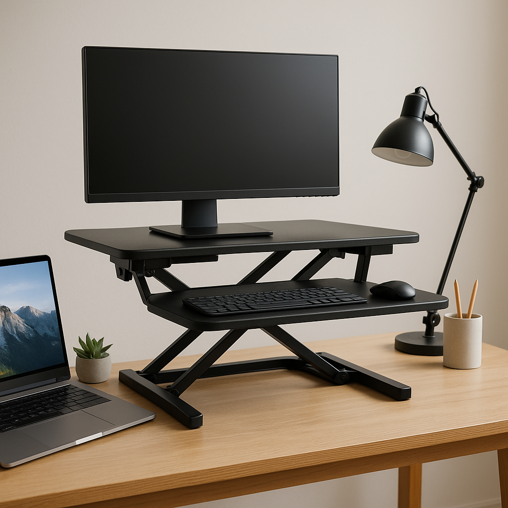
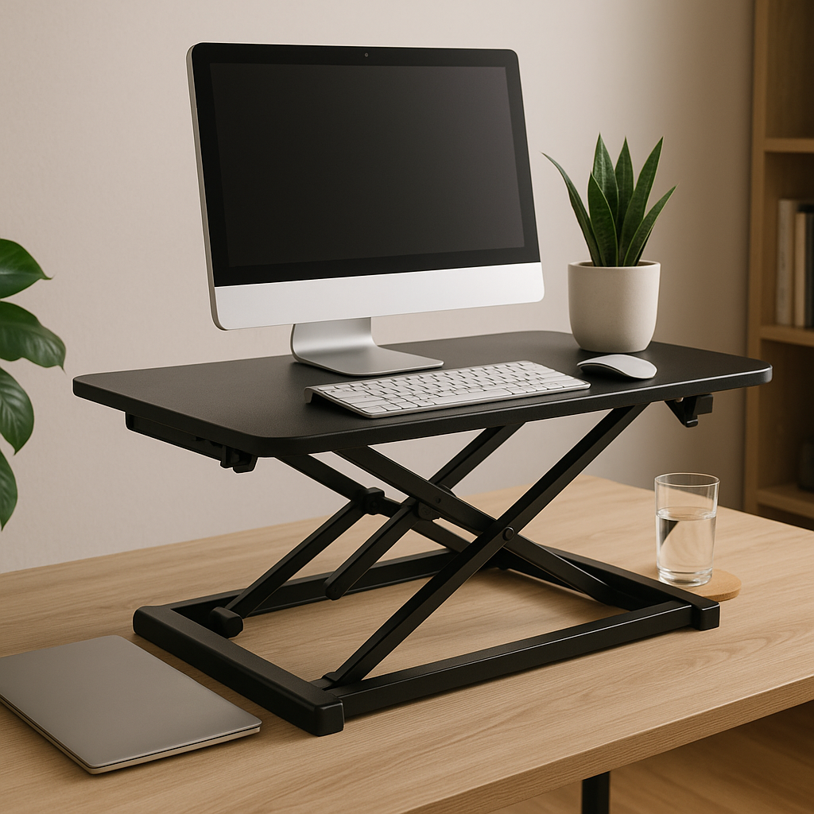

TL;DR
- Three solid alternatives to traditional standing desks under $300.
- Ideal for home offices, small spaces, and budget-conscious buyers.
- Evaluate your work style to choose the best option.
- Use provided templates for easy setup comparison.
- Avoid common mistakes to maximize your investment.
Scenario
Meet Sarah, a 28-year-old marketing professional working from her cramped one-bedroom apartment in New York City. She’s confined to a modest $300 budget for a desk upgrade to support her work-from-home routine while maximizing the limited space in her home office. Sarah is looking for solutions that promote better posture but does not want to compromise on overall aesthetics or practicality. She spends about 8 hours a day at her desk and has a preference for minimal but functional design.
Workflow
- Step 1: Identify your needs (10 minutes) - Consider your desk space and how you use your current setup.
- Step 2: Research alternatives (1 hour) - Look into specific products that fit your needs; evaluate user reviews for insights.
- Step 3: Create a comparison chart (30 minutes) - List favorite products side-by-side to examine features and costs.
- Step 4: Purchase your new desk alternative (15 minutes) - Make your decision and buy from a reliable retailer.
- Step 5: Set up the desk (30 minutes) - Follow assembly instructions or repurpose existing furniture for your new setup.
Tool options

- Convertible Sit-Stand Desk Converter - Ideal for those who want a standing desk option without replacing their desk.
- Height-Adjustable Desk Stool - Best for individuals who prefer a minimalist approach and need something portable.
- Wall-mounted Folding Desk - Perfect for small spaces; provides a working area that can be hidden away when not in use.
Quick comparison
| Option | Best for | Cost | Gotcha |
|---|---|---|---|
| Convertible Sit-Stand Desk Converter | Flexible work styles | $150 | Can clutter desk space |
| Height-Adjustable Desk Stool | Portability | $99 | Less back support |
| Wall-mounted Folding Desk | Small spaces | $200 | Requires wall mounting |
Common mistakes
- Not measuring space adequately before purchase.
- Ignoring online reviews that highlight long-term usability issues.
- Overlooking assembly time; some products take longer to set up than expected.
- Disregarding aesthetic coherence with existing furniture.
- Choosing a desk without testing height adjustments in-store or at a friend's home.
- Focusing solely on price instead of considering functionality.
- Forgetting to account for cable management and connectivity needs.
- Neglecting to plan for additional accessories (like a keyboard tray or monitor stand).
Templates

- Desk Comparison Chart Template:
- Product Name:
- Price:
- Dimensions:
- Features:
- User Reviews (1-5 stars):
- Setup Checklist:
- Measure workspace dimensions.
- Research and select preferred desk alternative.
- Ensure all tools for assembly are available.
- Confirm the return policy in case of issues.
- Plan out the arrangement of computer and accessories.
FAQ
- What is the best alternative for a standing desk under $300? The Convertible Sit-Stand Desk Converter is highly recommended for its flexibility and balance of price and functionality.
- Are wall-mounted desks sturdy? Yes, when properly installed, they can support a significant amount of weight, but ensure to check the wall type and mounting hardware.
- Do I really need a height-adjustable stool? It depends on your work style. If you like to alternate between sitting and standing, it can be beneficial.
- How can I maximize space in a small apartment? Consider multifunctional furniture like a wall-mounted folding desk that can be stored away when not in use.